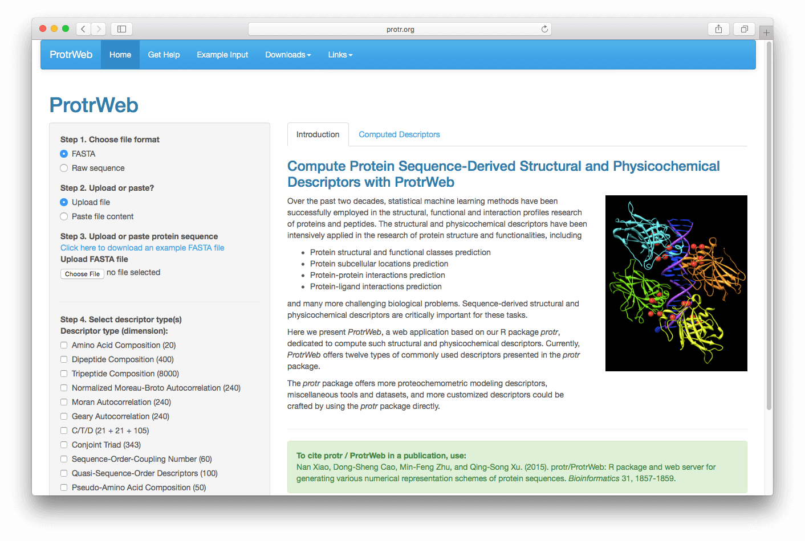
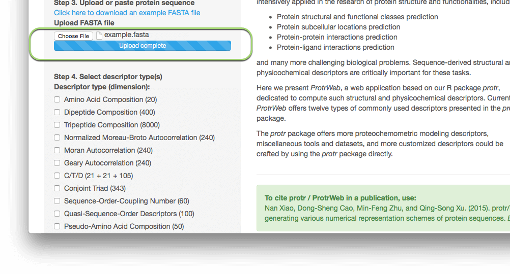
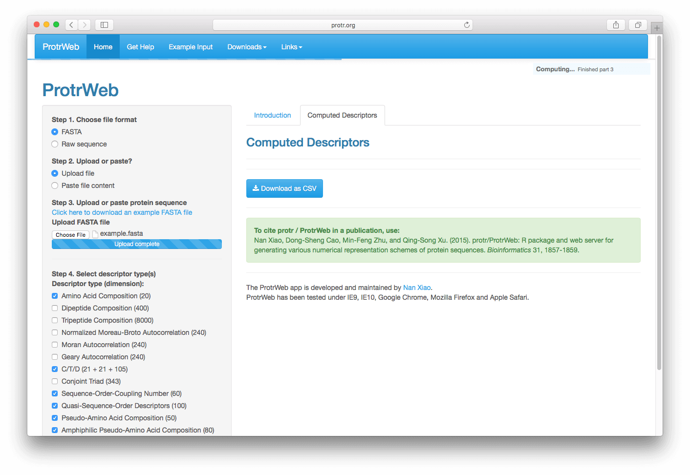
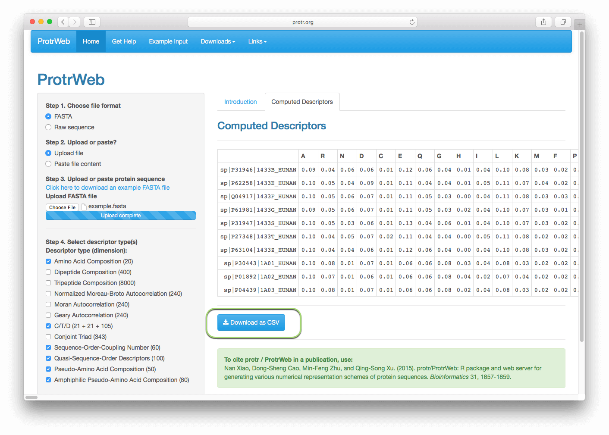

ProtrWeb does not require any knowledge of programming, it is a user-friendly and one-click-to-go online platform for computing the protein descriptors presented in the protr package. This is a short tutorial for using ProtrWeb.
Open http://protr.org, you will see the interface of ProtrWeb:
First, choose the file's format in which your protein sequences stored. Then you can choose to upload the file or paste the file content in a text box to submit. Here, let's assume your protein sequences were stored in a FASTA file (see Example Input), choose 'FASTA' and 'Upload file', then click the 'Choose File' button under "Upload FASTA File" in the left panel:
After selecting the file, the file will be automatically uploaded:
Note: Currently, the upload module does not support Internet Explorer 9 and below versions. Please use at least IE 10 or latest release version of Google Chrome, Mozilla Firefox, and Apple Safari.
Or, if your protein sequence are stored in a plain-text file (see Example Input), choose Raw sequence, Upload file, and click the 'Choose File' button under "Upload Raw Sequence File" in the left panel. After selecting the file, the file will be automatically uploaded as above.
Select the descriptors you want to use in the left panel, click the 'Submit and calculate selected descriptors' button:
A progress bar will appear in the upper right section of the page, showing the calculation progress:
 After a few seconds, the calculated descriptors should appear as a table, whose rows represents the protein sequences, the columns represents the descriptors. Click the'Download as CSV' button to download the result as a CSV file, the downloaded CSV file name contains the abbreviation name of the descriptors and file creation time:

You can then change the selected descriptors, re-submit, and the calculation result in the right panel will be automatically refreshed.
If you feel protr / ProtrWeb helps your research, please cite our paper in your publication: